Great Britain
 |
 Issue date: 2004 Jordan / Formula 1 Racing (1991-2004) - Smilers Sheetlet - limited edition of 950. Jordan Grand Prix was a Formula One constructor that competed from 1991 to 2005. The team is named after Irish businessman and founder Eddie Jordan. Jordan and his team were well known for a "rock and roll" attitude which added colour and character to Formula One in the 1990s. In early 2005, the team was sold to Midland Group, who competed for one final season as 'Jordan', before renaming the team as MF1 Racing for the 2006 season, before being sold later in 2006 to Dutch car manufacturer Spyker Cars to become Spyker F1 for 2007, and then sold again to become Force India in 2008. 1999 was the team's finest season, Heinz-Harald Frentzen, joined Damon Hill as their second driver. The season was a nightmare for Hill, who was to retire at the end of the 1999 season. However, Frentzen's season was immensely successful, with the German earning two victories and a pole position. For a short while Frentzen had entertained thoughts of a world title, but poor luck and greater speed from McLaren and Ferrari ended his hopes. Frentzen finished third in the Drivers' Championship and the team also finished third amongst the Constructors'. "Smilers" are sheets of 10 to 20 stamps, each accompanied by a perforated tab, which is designed for a personalized photo image. The British Post Office entered the personalized stamp market in 2000, at the Stamp Show 2000, held in Earl's Court, London. They prepared five sheets of 10 stamps for personalized photographs. These comprised the "Clown", the "Mona Lisa", "Dennis the Menace", the "Policeman", and the "Teddy Bear" from the 1991 "Famous Smiles" greetings booklet issue. They also prepared a special commemorative sheet of 10 with generic tabs to promote the show. This sheet was based upon the complete 10-stamp issue of this "Famous Smiles" booklet, and thus the name "Smilers" was adopted by the British Post Office.  Issue date: 21st July 2007 A set of 6 stamps commemorating some of Britain's most notable F1 drivers, ranging from Stirling Moss in the 1950s to Nigel Mansell in the 1980s. The six stamps, in varying denominations, depict Moss in his 1957 Vanwall, Graham Hill in his 1962 BRM, Jim Clark in his 1963 Lotus, Jackie Stewart in his 1973 Tyrell, James Hunt in his 1976 McLaren and Nigel Mansell in his 1986 Williams. The stamps were timed to capitalize on Lewis Hamilton's home grand prix at Silverstone. As a matter of protocol no British stamp can depict the face a living person other than the monarch, Her Majesty Queen Elizabeth II, which explains why the cars are pictured from above, revealing only the tops of the drivers' helmets. The stamps have caused some controversy as they celebrate one driver -- Stirling Moss -- who never won a world championship, while omitting Mike Hawthorn, the first British driver to win the title, and Damon Hill, the last British driver to win the title. The set consists of the presentation pack and various first day covers (signed by Nico Rosberg, Alex Wurz - the Williams drivers for 2007, and Ross Brawn, Adrian Newey and Patrick Head).  Issue date: 21st July 2007 A set of 6 stamps commemorating some of Britain's most notable F1 drivers, ranging from Stirling Moss in the 1950s to Nigel Mansell in the 1980s. The six stamps, in varying denominations, depict Moss in his 1957 Vanwall, Graham Hill in his 1962 BRM, Jim Clark in his 1963 Lotus, Jackie Stewart in his 1973 Tyrell, James Hunt in his 1976 McLaren and Nigel Mansell in his 1986 Williams. The stamps were timed to capitalize on Lewis Hamilton's home grand prix at Silverstone. As a matter of protocol no British stamp can depict the face a living person other than the monarch, Her Majesty Queen Elizabeth II, which explains why the cars are pictured from above, revealing only the tops of the drivers' helmets. The stamps have caused some controversy as they celebrate one driver -- Stirling Moss -- who never won a world championship, while omitting Mike Hawthorn, the first British driver to win the title, and Damon Hill, the last British driver to win the title. The set consists of the presentation pack and various first day covers (signed by Nico Rosberg, Alex Wurz - the Williams drivers for 2007, and Ross Brawn, Adrian Newey and Patrick Head).  Issue date: 2010 TBD  Issue date: 2010 A special mark commemorating 60 years for F1 racing at Silverstone - one cover is signed by Murray Walker and Martin Brundle. The 1950 British Grand Prix was held on 13th May 1950 at Silverstone. It was the first round of the 1950 World Drivers Championship and the fifth race of the season. The race, contested over 58 laps, was won by Giuseppe Farina for the Alfa Romeo team after starting from pole position. Luigi Fagioli finished second in another Alfa Romeo, and Reg Parnell third in a third Alfa Romeo. The race followed the Pau Grand Prix, San Remo Grand Prix, the Richmond Trophy and the Paris Grand Prix. It was the first World Championship Formula One race in the modern era. The 2010 British Grand Prix was held on 11th July 2010 at Silverstone. The race was won by Mark Weber (Red Bull-Renault), with Lewis Hamilton (McLaren-Mercedes) second and Nico Rosberg (Mercedes) third.  Issue date: 8th July 2010 Issued on 8th July 2010, ahead of the 60th British Grand Prix, the British World Champion Grand Prix Drivers sheet features ten 1st Class Union Flag stamps with labels featuring the ten British drivers champions of F1.  Issue date: 2010 A special mark commemorating 60 years for F1 racing at Silverstone - one cover is signed by Murray Walker and Martin Brundle. The 1950 British Grand Prix was held on 13th May 1950 at Silverstone. It was the first round of the 1950 World Drivers Championship and the fifth race of the season. The race, contested over 58 laps, was won by Giuseppe Farina for the Alfa Romeo team after starting from pole position. Luigi Fagioli finished second in another Alfa Romeo, and Reg Parnell third in a third Alfa Romeo. The race followed the Pau Grand Prix, San Remo Grand Prix, the Richmond Trophy and the Paris Grand Prix. It was the first World Championship Formula One race in the modern era. The 2010 British Grand Prix was held on 11th July 2010 at Silverstone. The race was won by Mark Weber (Red Bull-Renault), with Lewis Hamilton (McLaren-Mercedes) second and Nico Rosberg (Mercedes) third. 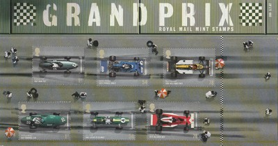 Issue date: 21st July 2007 A set of 6 stamps commemorating some of Britain's most notable F1 drivers, ranging from Stirling Moss in the 1950s to Nigel Mansell in the 1980s. The six stamps, in varying denominations, depict Moss in his 1957 Vanwall, Graham Hill in his 1962 BRM, Jim Clark in his 1963 Lotus, Jackie Stewart in his 1973 Tyrell, James Hunt in his 1976 McLaren and Nigel Mansell in his 1986 Williams. The stamps were timed to capitalize on Lewis Hamilton's home grand prix at Silverstone. As a matter of protocol no British stamp can depict the face a living person other than the monarch, Her Majesty Queen Elizabeth II, which explains why the cars are pictured from above, revealing only the tops of the drivers' helmets. The stamps have caused some controversy as they celebrate one driver -- Stirling Moss -- who never won a world championship, while omitting Mike Hawthorn, the first British driver to win the title, and Damon Hill, the last British driver to win the title. The set consists of the presentation pack and various first day covers (signed by Nico Rosberg, Alex Wurz - the Williams drivers for 2007, and Ross Brawn, Adrian Newey and Patrick Head). 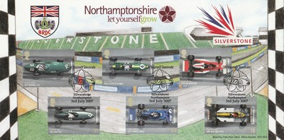 Issue date: 21st July 2007 A set of 6 stamps commemorating some of Britain's most notable F1 drivers, ranging from Stirling Moss in the 1950s to Nigel Mansell in the 1980s. The six stamps, in varying denominations, depict Moss in his 1957 Vanwall, Graham Hill in his 1962 BRM, Jim Clark in his 1963 Lotus, Jackie Stewart in his 1973 Tyrell, James Hunt in his 1976 McLaren and Nigel Mansell in his 1986 Williams. The stamps were timed to capitalize on Lewis Hamilton's home grand prix at Silverstone. As a matter of protocol no British stamp can depict the face a living person other than the monarch, Her Majesty Queen Elizabeth II, which explains why the cars are pictured from above, revealing only the tops of the drivers' helmets. The stamps have caused some controversy as they celebrate one driver -- Stirling Moss -- who never won a world championship, while omitting Mike Hawthorn, the first British driver to win the title, and Damon Hill, the last British driver to win the title. The set consists of the presentation pack and various first day covers (signed by Nico Rosberg, Alex Wurz - the Williams drivers for 2007, and Ross Brawn, Adrian Newey and Patrick Head).  Issue date: 21st July 2007 A set of 6 stamps commemorating some of Britain's most notable F1 drivers, ranging from Stirling Moss in the 1950s to Nigel Mansell in the 1980s. The six stamps, in varying denominations, depict Moss in his 1957 Vanwall, Graham Hill in his 1962 BRM, Jim Clark in his 1963 Lotus, Jackie Stewart in his 1973 Tyrell, James Hunt in his 1976 McLaren and Nigel Mansell in his 1986 Williams. The stamps were timed to capitalize on Lewis Hamilton's home grand prix at Silverstone. As a matter of protocol no British stamp can depict the face a living person other than the monarch, Her Majesty Queen Elizabeth II, which explains why the cars are pictured from above, revealing only the tops of the drivers' helmets. The stamps have caused some controversy as they celebrate one driver -- Stirling Moss -- who never won a world championship, while omitting Mike Hawthorn, the first British driver to win the title, and Damon Hill, the last British driver to win the title. The set consists of the presentation pack and various first day covers (signed by Nico Rosberg, Alex Wurz - the Williams drivers for 2007, and Ross Brawn, Adrian Newey and Patrick Head). 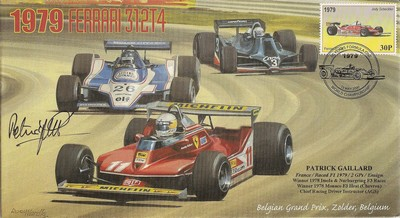 Issue date: 13th May 2000 One of a series of Formula 1 commemorative envelopes produced by Motorsport Charity Memorabilia to raise funds for Papworth Hospital CardioThoracic Research Unit.  Issue date: 13th May 2000 One of a series of Formula 1 commemorative envelopes produced by Motorsport Charity Memorabilia to raise funds for Papworth Hospital CardioThoracic Research Unit. 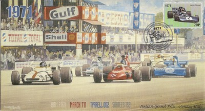 Issue date: 13th May 2000 One of a series of Formula 1 commemorative envelopes produced by Motorsport Charity Memorabilia to raise funds for Papworth Hospital CardioThoracic Research Unit.  Issue date: 13th May 2000 One of a series of Formula 1 commemorative envelopes produced by Motorsport Charity Memorabilia to raise funds for Papworth Hospital CardioThoracic Research Unit. 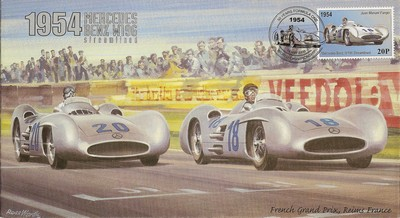 Issue date: 13th May 2000 One of a series of Formula 1 commemorative envelopes produced by Motorsport Charity Memorabilia to raise funds for Papworth Hospital CardioThoracic Research Unit.  Issue date: 13th May 2000 One of a series of Formula 1 commemorative envelopes produced by Motorsport Charity Memorabilia to raise funds for Papworth Hospital CardioThoracic Research Unit.  Issue date: 13th May 2000 One of a series of Formula 1 commemorative envelopes produced by Motorsport Charity Memorabilia to raise funds for Papworth Hospital CardioThoracic Research Unit.  Issue date: 13th May 2000 One of a series of Formula 1 commemorative envelopes produced by Motorsport Charity Memorabilia to raise funds for Papworth Hospital CardioThoracic Research Unit.  Issue date: 13th May 2000 One of a series of Formula 1 commemorative envelopes produced by Motorsport Charity Memorabilia to raise funds for Papworth Hospital CardioThoracic Research Unit. 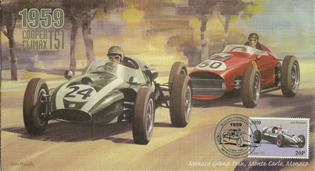 Issue date: 13th May 2000 One of a series of Formula 1 commemorative envelopes produced by Motorsport Charity Memorabilia to raise funds for Papworth Hospital CardioThoracic Research Unit.  Issue date: 13th May 2000 One of a series of Formula 1 commemorative envelopes produced by Motorsport Charity Memorabilia to raise funds for Papworth Hospital CardioThoracic Research Unit.  Issue date: 13th May 2000 One of a series of Formula 1 commemorative envelopes produced by Motorsport Charity Memorabilia to raise funds for Papworth Hospital CardioThoracic Research Unit.  Issue date: 13th May 2000 One of a series of Formula 1 commemorative envelopes produced by Motorsport Charity Memorabilia to raise funds for Papworth Hospital CardioThoracic Research Unit.  Issue date: 13th May 2000 One of a series of Formula 1 commemorative envelopes produced by Motorsport Charity Memorabilia to raise funds for Papworth Hospital CardioThoracic Research Unit.  Issue date: 13th May 2000 One of a series of Formula 1 commemorative envelopes produced by Motorsport Charity Memorabilia to raise funds for Papworth Hospital CardioThoracic Research Unit.  Issue date: 13th May 2000 One of a series of Formula 1 commemorative envelopes produced by Motorsport Charity Memorabilia to raise funds for Papworth Hospital CardioThoracic Research Unit.  Issue date: 13th May 2000 One of a series of Formula 1 commemorative envelopes produced by Motorsport Charity Memorabilia to raise funds for Papworth Hospital CardioThoracic Research Unit. 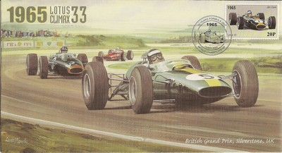 Issue date: 13th May 2000 One of a series of Formula 1 commemorative envelopes produced by Motorsport Charity Memorabilia to raise funds for Papworth Hospital CardioThoracic Research Unit.  Issue date: 13th May 2000 One of a series of Formula 1 commemorative envelopes produced by Motorsport Charity Memorabilia to raise funds for Papworth Hospital CardioThoracic Research Unit.  Issue date: 13th May 2000 One of a series of Formula 1 commemorative envelopes produced by Motorsport Charity Memorabilia to raise funds for Papworth Hospital CardioThoracic Research Unit.  Issue date: 13th May 2000 One of a series of Formula 1 commemorative envelopes produced by Motorsport Charity Memorabilia to raise funds for Papworth Hospital CardioThoracic Research Unit.  Issue date: 13th May 2000 One of a series of Formula 1 commemorative envelopes produced by Motorsport Charity Memorabilia to raise funds for Papworth Hospital CardioThoracic Research Unit.  Issue date: 13th May 2000 One of a series of Formula 1 commemorative envelopes produced by Motorsport Charity Memorabilia to raise funds for Papworth Hospital CardioThoracic Research Unit. 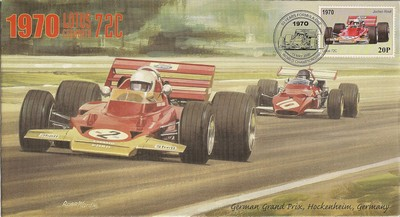 Issue date: 13th May 2000 One of a series of Formula 1 commemorative envelopes produced by Motorsport Charity Memorabilia to raise funds for Papworth Hospital CardioThoracic Research Unit. 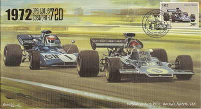 Issue date: 13th May 2000 One of a series of Formula 1 commemorative envelopes produced by Motorsport Charity Memorabilia to raise funds for Papworth Hospital CardioThoracic Research Unit.  Issue date: 13th May 2000 One of a series of Formula 1 commemorative envelopes produced by Motorsport Charity Memorabilia to raise funds for Papworth Hospital CardioThoracic Research Unit.  Issue date: 13th May 2000 One of a series of Formula 1 commemorative envelopes produced by Motorsport Charity Memorabilia to raise funds for Papworth Hospital CardioThoracic Research Unit.  Issue date: 13th May 2000 One of a series of Formula 1 commemorative envelopes produced by Motorsport Charity Memorabilia to raise funds for Papworth Hospital CardioThoracic Research Unit. 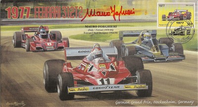 Issue date: 13th May 2000 One of a series of Formula 1 commemorative envelopes produced by Motorsport Charity Memorabilia to raise funds for Papworth Hospital CardioThoracic Research Unit. 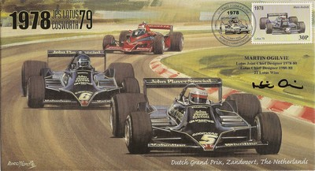 Issue date: 13th May 2000 One of a series of Formula 1 commemorative envelopes produced by Motorsport Charity Memorabilia to raise funds for Papworth Hospital CardioThoracic Research Unit.  Issue date: Unknown One of a series of Formula 1 commemorative envelopes produced by Motorsport Charity Memorabilia to raise funds for Papworth Hospital CardioThoracic Research Unit. 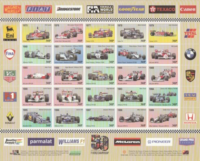 Issue date: Unknown One of a series of Formula 1 commemorative envelopes produced by Motorsport Charity Memorabilia to raise funds for Papworth Hospital CardioThoracic Research Unit.  Issue date: Unknown One of a series of Formula 1 commemorative envelopes produced by Motorsport Charity Memorabilia to raise funds for Papworth Hospital CardioThoracic Research Unit.  Issue date: Unknown One of a series of Formula 1 commemorative envelopes produced by Motorsport Charity Memorabilia to raise funds for Papworth Hospital CardioThoracic Research Unit. 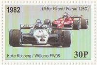 Issue date: Unknown One of a series of Formula 1 commemorative envelopes produced by Motorsport Charity Memorabilia to raise funds for Papworth Hospital CardioThoracic Research Unit.  Issue date: Unknown One of a series of Formula 1 commemorative envelopes produced by Motorsport Charity Memorabilia to raise funds for Papworth Hospital CardioThoracic Research Unit.  Issue date: Unknown One of a series of Formula 1 commemorative envelopes produced by Motorsport Charity Memorabilia to raise funds for Papworth Hospital CardioThoracic Research Unit.  Issue date: Unknown One of a series of Formula 1 commemorative envelopes produced by Motorsport Charity Memorabilia to raise funds for Papworth Hospital CardioThoracic Research Unit. 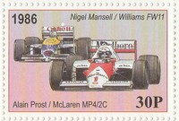 Issue date: Unknown One of a series of Formula 1 commemorative envelopes produced by Motorsport Charity Memorabilia to raise funds for Papworth Hospital CardioThoracic Research Unit.  Issue date: Unknown One of a series of Formula 1 commemorative envelopes produced by Motorsport Charity Memorabilia to raise funds for Papworth Hospital CardioThoracic Research Unit. 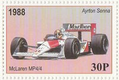 Issue date: Unknown One of a series of Formula 1 commemorative envelopes produced by Motorsport Charity Memorabilia to raise funds for Papworth Hospital CardioThoracic Research Unit. 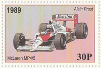 Issue date: Unknown One of a series of Formula 1 commemorative envelopes produced by Motorsport Charity Memorabilia to raise funds for Papworth Hospital CardioThoracic Research Unit. 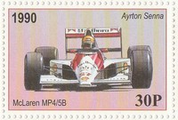 Issue date: Unknown One of a series of Formula 1 commemorative envelopes produced by Motorsport Charity Memorabilia to raise funds for Papworth Hospital CardioThoracic Research Unit. 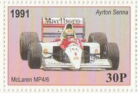 Issue date: Unknown One of a series of Formula 1 commemorative envelopes produced by Motorsport Charity Memorabilia to raise funds for Papworth Hospital CardioThoracic Research Unit.  Issue date: Unknown One of a series of Formula 1 commemorative envelopes produced by Motorsport Charity Memorabilia to raise funds for Papworth Hospital CardioThoracic Research Unit. 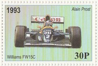 Issue date: Unknown One of a series of Formula 1 commemorative envelopes produced by Motorsport Charity Memorabilia to raise funds for Papworth Hospital CardioThoracic Research Unit. 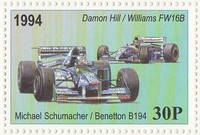 Issue date: Unknown One of a series of Formula 1 commemorative envelopes produced by Motorsport Charity Memorabilia to raise funds for Papworth Hospital CardioThoracic Research Unit.  Issue date: Unknown One of a series of Formula 1 commemorative envelopes produced by Motorsport Charity Memorabilia to raise funds for Papworth Hospital CardioThoracic Research Unit.  Issue date: Unknown One of a series of Formula 1 commemorative envelopes produced by Motorsport Charity Memorabilia to raise funds for Papworth Hospital CardioThoracic Research Unit.  Issue date: Unknown One of a series of Formula 1 commemorative envelopes produced by Motorsport Charity Memorabilia to raise funds for Papworth Hospital CardioThoracic Research Unit.  Issue date: Unknown One of a series of Formula 1 commemorative envelopes produced by Motorsport Charity Memorabilia to raise funds for Papworth Hospital CardioThoracic Research Unit. 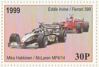 Issue date: Unknown One of a series of Formula 1 commemorative envelopes produced by Motorsport Charity Memorabilia to raise funds for Papworth Hospital CardioThoracic Research Unit. |